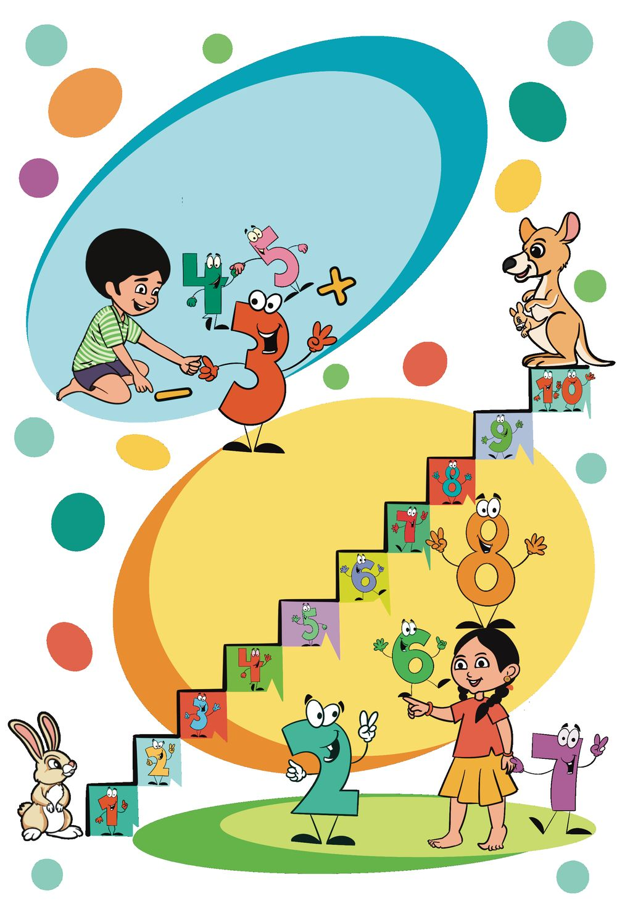
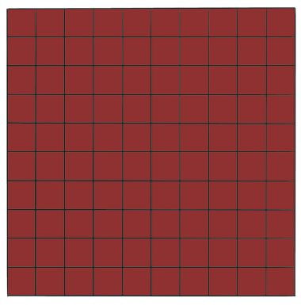
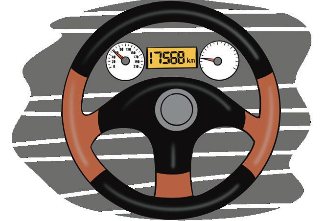
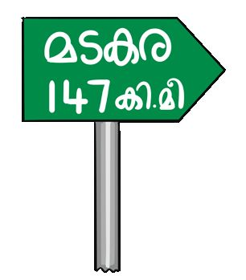
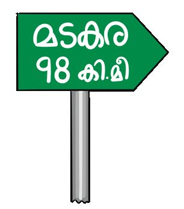
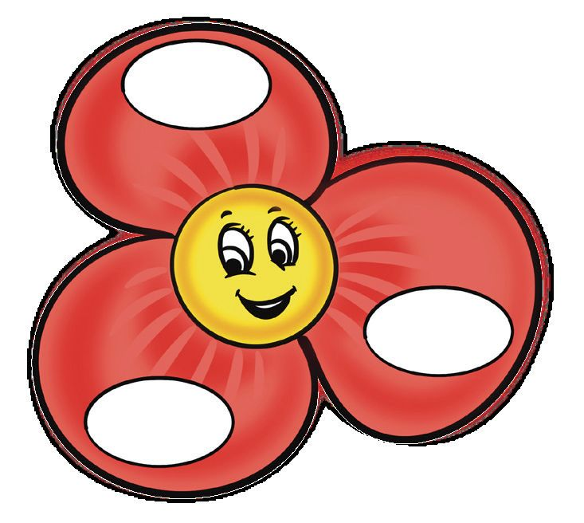

7
കുറയ്ക്കണോോ കൂട്ടണോോ


7
കുറയ്ക്കണോോ കൂട്ടണോോ


ഗണിതം സ്റ്റാൻഡേർഡ് - III
മുത്തുകളിടാം ഒഴിഞ്ഞ പാത്രം നിറയ്കക്കകാം.
100 മുത്തുകളിൽ നിന്ന് ഓരോോന്ന് വീതം എണ്ണിയെടുക്കണേ...
'മുത്തുകളിടാം' കളി കളിച്ചില്ലേ ? പട്ടിക പൂർത്തിയാക്കാം: നമ്പർ
കൈവശമുള്ള മുത്തുകളുടെ എണ്ണം
1
90
2
75
3 4
100 ആകാൻ വേണ്ട
മുത്തുകളുടെ എണ്ണം
20 50
5
1
6
12
7
33
ഞാൻ കണക്കാക്കിയ രീതി:
96


കുറയ്ക്കണോോ കൂട്ടണോോ
മുത്തുമാറ്റാം 'മുത്തുകളിടാം' കളിക്കായി ഓരോോ കുട്ടിയും 100 മുത്ത് വീതം കൊൊണ്ടു വന്നു. 10 കുട്ടികൾ കൊൊണ്ടുവന്ന മുത്ത് ഒരു പാത്രത്തിലിട്ടു. പാത്രത്തിൽ ആകെ എത്ര മുത്ത് ? ടീച്ചർ പാത്രത്തിൽ നിന്ന് ഒരു മുത്ത് എടുത്തുമാറ്റി. ഇപ്പപോൾ പാത്രത്തിലെ മുത്തുകൾ ? എങ്ങനെ കണക്കാക്കി ?
പാത്രത്തിൽ എത്ര മുത്തുണ്ട് മോോളേ ?
999 മുത്തിൽ നിന്ന് ഓരോോ ഗ്രൂപ്പിനും 111 വീതം നൽകി. ഓരോോ
പ്രാവശ്യവും ബാക്കി വന്ന എണ്ണം എഴുതൂ. 999 – 111
= 888
888 – 111
=
– 111
=
–
=
–
=
–
=
–
=
–
=
–
= 0
എത്ര ഗ്രൂപ്പിനാണ് മുത്ത് കിട്ടിയത് ?
ഒരു സംഖ്യയിൽ നിന്ന് അതേ സംഖ്യ കുറച്ചാൽ പൂജ്യയം കിട്ടും. 97


ഗണിതം സ്റ്റാൻഡേർഡ് - III
സ്ഥാനം മാറുമ്പപോൾ
അബാക്കസിലെ സംഖ്യ എഴുതൂ...
നൂറ്
പത്ത്
ഒന്ന്
ഈ സംഖ്യ 231 ആക്കാൻ ഏതൊൊക്കെ മുത്തുകൾ മാറ്റണം ?
എടുത്തുമാറ്റിയ മുത്തുകൾ ഈ അബാക്കസിൽ വയ്ക്കൂ...
മുത്തുകളുടെ സ്ഥാനം നോോക്കണേ...
കിട്ടിയ സംഖ്യ എഴുതൂ...
98


കുറയ്ക്കണോോ കൂട്ടണോോ
അബാക്കസിലെ സംഖ്യ അബാക്കസിലെ സംഖ്യ എന്താണ് ? നൂറിന്റെ സ്ഥാനത്ത് നിന്ന് ഒരു മുത്ത് മാറ്റിയാൽ കിട്ടുന്ന സംഖ്യ എന്താണ് ? നൂറ്
പത്ത്
ഒന്ന്
ഇനി പത്തിന്റെ സ്ഥാനത്ത് നിന്ന് രണ്ട് മുത്ത് കൂടി മാറ്റൂ... കിട്ടുന്ന സംഖ്യ എന്താണ് ? ഒന്നിന്റെ സ്ഥാനത്ത് നിന്ന് നാല് മുത്ത് കൂടി മാറ്റിയാലോോ. കിട്ടുന്ന സംഖ്യ എന്താണ് ? ഇപ്പപോൾ അബാക്കസിൽ മുത്തുകൾ എങ്ങനെയാണ് ? മുത്ത് വരയ്ക്കൂ... നൂറ്
പത്ത്
ഒന്ന്
ഒന്നിന്റെ സ്ഥാനത്തുള്ള ഒരു മുത്തെടുത്ത് പത്തിന്റെ സ്ഥാനത്തിടൂ... സംഖ്യയ എന്താണ് ? ചെയ്ത കാര്യയം ഇങ്ങനെ എഴുതാം. ആദ്യസംഖ്യ 300 + 40 + 7 = 347
347 − 100 = 247
വ്യത്യയാസം വരുത്തിയ സംഖ്യ
100 + 20 + 4 = 124
247 − 20 = 227
കിട്ടിയ സംഖ്യ
200 + 20 + 3 = 223
227 −
വ്യത്യയാസം ഇങ്ങനെയും കണക്കാക്കാം
4 = 223
നൂറ്
പത്ത്
ഒന്ന്
3
4
7
1
2
4
2
2
3
99


ഗണിതം സ്റ്റാൻഡേർഡ് - III
ബാക്കിയെത്ര ?
ടീച്ചറുടെ കൈയിൽ 578 രൂപയുണ്ട്. അബാക്കസ് നിർമ്മിക്കാൻ സ്കൂൾ സൊൊസൈറ്റിയിൽ നിന്ന് മുത്ത് വാങ്ങി. 4 നൂറു രൂപയും 6 പത്തു രൂപയും 5 ഒരു രൂപയും കൊൊടുത്തു.
ടീച്ചറുടെ കൈയിൽ ബാക്കി എത്ര രൂപയുണ്ട് ? ടീച്ചർ കൊൊടുത്ത രൂപ
ബാക്കി രൂപ
578 − 465 = 113
ഞാൻ കണക്കാക്കിയത് ശരിയാണോോ ?
465 + 113 = 578
ശരിയാണല്ലലോ.
അബാക്കസ് വാങ്ങാൻ സ്കൂൾ സൊൊസൈറ്റിയിൽ നിന്നും ഇഷ 125 രൂപ വിലയുള്ള അബാക്കസ് വാങ്ങി. 150 രൂപ കൊൊടുത്തു. ഏതൊൊക്കെ നോോട്ടുകളാണ് കൊൊടുത്തത് ?
സൊൊസൈറ്റിയിൽ നിന്നും എത്ര രൂപ ബാക്കി കൊൊടുത്തു ? എങ്ങനെയാണ് കണക്കാക്കിയത് ? രീതി (1) 125 + 5 = 130 (ആദ്യയം 5 രൂപ കൊൊടുത്തു) രീതി (4) 130 + 20 = 150 (പിന്നീട് 20 രൂപ കൊൊടുത്തു) 5 + 20 = 25 (ആകെ 25 രൂപ കൊൊടുത്തു) സംഖ്യ നൂറ് രീതി (2) രീതി (3) 150 1 150 – 125 150 – 1 = 149
150 – 125 150 – 1 = 149
149 – 125 = 24 24 + 1 = 25
125 – 1 = 124 149 – 124 = 25
100
125
1
പത്ത്
ഒന്ന്
4
10
2
5
2
5


കുറയ്ക്കണോോ കൂട്ടണോോ
എടുത്തു മാറ്റാം ചിത്രങ്ങൾ നോോക്കൂ.
എത്ര പത്ത് ?
ഇതിൽ എത്ര നൂറ് ഉണ്ട് ?
സംഖ്യ എന്താണ് ? ഇവയിൽ നിന്നും 212 ചതുരം എടുത്തുമാറ്റി. ബാക്കിവന്നത്: എത്ര നൂറ് ?
എത്ര പത്ത് ?
എത്ര ഒന്ന് ?
സംഖ്യ എന്താണ് ? 332 - 212 =
ഇതുപോോലെ 338 ൽ നിന്ന് 116 കുറയ്ക്കാമോോ ? എങ്ങനെ കണക്കാക്കി ? കണക്കാക്കിയ രീതി എഴുതൂ.
101
എത്ര ഒന്ന് ?


ഗണിതം സ്റ്റാൻഡേർഡ് - III
ഇനി ആര് ?
കുറയ്ക്കണോോ കൂട്ടണോോ ? സ്കൂൾ സൊൊസൈറ്റിയിൽ രണ്ട് ദിവസങ്ങളിലായി 642 രൂപ കിട്ടി. ഒന്നാം ദിവസം കിട്ടിയത് 253 രൂപ. രണ്ടാം ദിവസം എത്ര രൂപ കിട്ടി ? എങ്ങനെയൊൊക്കെ കണക്കാക്കാം ? രീതി (1) 300
253
42
40
7 260
600
300
642
7 + 40 + 300 + 42 = 389
രീതി (2)
രീതി (3) സംഖ്യ
നൂറ്
പത്ത്
ഒന്ന്
300 + 342 = 642
642
5
13
12
342 + 47 = 389
253
2
5
3
3
8
9
253 + 47 = 300
102

കുറയ്ക്കണോോ കൂട്ടണോോ
വിലയെത്ര ? സുഷയുടെ കൈയിൽ 572 രൂപ ഉണ്ടായിരുന്നു. മുത്തും അബാക്കസും വാങ്ങിയ ശേഷം 394 രൂപ ബാക്കിയുണ്ട്. മുത്തിനും അബാക്കസിനും കൂടി എന്തു വിലയായി ? ചോോദ്യയം വായിച്ചപ്പപോൾ എനിക്ക് മനസ്സിലായത്:
ഉത്തരം കണക്കാക്കാൻ ചെയ്യേണ്ട കാര്യങ്ങൾ:
ഞാൻ ചെയ്ത രീതി: കിട്ടിയ ഉത്തരം.
കൂട്ടുകാരുടെ രീതി:
103


ഗണിതം സ്റ്റാൻഡേർഡ് - III
വ്യത്യയാസമെത്ര ? ഇഷയും സുഷയും അബാക്കസ് കളിക്കുകയാണ്. സുഷേ നീയുണ്ടാക്കിയ സംഖ്യ എത്രയാണ് ?
നൂറ് പത്ത് ഒന്ന്
നൂറ് പത്ത് ഒന്ന്
അബാക്കസിലെ സംഖ്യ ഇഷ
ആരാണ് വലിയ സംഖ്യ ഉണ്ടാക്കിയത് ? സംഖ്യകളുടെ വ്യത്യയാസം എത്രയാണ് ?
സുഷ
എന്റെ സംഖ്യ 948.
നൂറ്
പത്ത്
ഞാനത് 849 എന്ന് മാറ്റി.
നൂറ്
ഒന്ന്
104
പത്ത്
ഒന്ന്


കുറയ്ക്കണോോ കൂട്ടണോോ
അബാക്കസ് നോോക്കൂ. 100 കുറയുകയും മുത്തുകളുടെ എണ്ണത്തിലെ മാറ്റം എന്താണ് ? 1 കൂടുകയും നൂറ് : 1 കുറഞ്ഞു. ചെയ്താൽ ആകെ പത്ത് : മാറ്റമില്ല. കുറവ് 99. ഒന്ന് : 1 കൂടി. 948 എന്ന സംഖ്യ 849 ആയപ്പപോൾ ഉള്ള വ്യത്യയാസം എന്താണ് ? അവർ കണ്ടുപിടിച്ച മറ്റ് സംഖ്യാജോോടികൾ നോോക്കൂ... അവ തമ്മിലുള്ള വ്യത്യയാസം കണക്കാക്കാമോോ ? 635, 536
423, 324
746, 647
.........
.........
.........
ഉത്തരങ്ങൾ നോോക്കൂ. എന്താണ് കണ്ടുപിടിച്ചത് ?
സംഖ്യകൾ ഇങ്ങനെ ആയാലോോ ? വ്യത്യയാസം എത്രയാണ് ? 896, 698
634, 436
.........
.........
എന്താണ് കണ്ടുപിടിച്ചത് ?
105


ഗണിതം സ്റ്റാൻഡേർഡ് - III
വലിയ സംഖ്യയും ചെറിയ സംഖ്യയും • തുടർച്ചയായ 3 അക്കങ്ങൾ എഴുതുക.
• ഇവ എല്ലാം ഉപയോോഗിച്ച് അക്കങ്ങൾ ആവർത്തിക്കാതെ ഏറ്റവും വലിയ സംഖ്യയയും ഏറ്റവും ചെറിയ സംഖ്യയയും എഴുതുക. • അവയുടെ വ്യയത്യാസം കണക്കാക്കുക. അക്കങ്ങൾ 1, 2, 3
വലിയ സംഖ്യ
ചെറിയ സംഖ്യ
321
123
വ്യത്യയാസം
2, 3, 4 3, ......., ....... ......., ......., 6 ......., ......., ....... 6, ......., .......
വ്യത്യയാസം നോോക്കൂ. എന്താണ് കണ്ടുപിടിച്ചത് ?
മുത്ത് മാറ്റിയാൽ അബാക്കസിലെ സംഖ്യ എന്താണ് ?
ഈ അബാക്കസിലെ നൂറിന്റെ സ്ഥാനത്തെ ഒരു മുത്തെടുത്ത് പത്തിന്റെ സ്ഥാനത്ത് ഇടൂ. കിട്ടുന്ന സംഖ്യ എന്താണ് ? നൂറ്
പത്ത്
ഒന്ന്
ഒരു 100 കുറഞ്ഞു. ഒരു 10 കൂടി. 106

കുറയ്ക്കണോോ കൂട്ടണോോ
രണ്ടു സംഖ്യകളും തമ്മിലുള്ള വ്യത്യയാസമെത്രയാണ് ? കണക്കാക്കിയ രീതി എഴുതൂ.
വിനോോദയാത്ര ഇഷയും കുടുംബവും വിനോോദയാത്രയ്ക്കുള്ള തയ്യാറെടുപ്പിലാണ്. അവർ ബാഗ് വാങ്ങാൻ കടയിലെത്തി.
നീലബാഗിന്റെ വില
ചുവപ്പ്ബബാഗിന്റെ വില
നീല ബാഗിനേക്കാൾ ചുവപ്പ് ബാഗിന്റെ വില എത്ര കൂടുതലാണ് ? ഞാൻ കണക്കാക്കിയ രീതി:
കൂട്ടുകാരുടെ രീതി:
107




ഗണിതം സ്റ്റാൻഡേർഡ് - III
മടകരയിലേക്ക്... അടുത്ത ദിവസം യാത്ര തുടങ്ങി. കാറിലാണ് യാത്ര. യാത്ര തുടങ്ങിയപ്പപോൾ മീറ്ററിലെ സംഖ്യ ഇഷ എഴുതി വച്ചു. അവസാന മൂന്നക്കമാണ് എഴുതിയത്. ഇഷ എഴുതിയത് 568 19 കിലോോമീറ്റർ സഞ്ചരിച്ചു കഴിഞ്ഞപ്പപോൾ ദൂരം
സൂചിപ്പിക്കുന്ന ബോോർഡ് കണ്ടു. ഇഷയുടെ വീട്ടിൽ നിന്നും മടകരയ്ക്ക് എത്ര ദൂരം ഉണ്ട് ? വീണ്ടും സഞ്ചരിച്ചപ്പപോൾ മറ്ററൊരു ബോോർഡും കണ്ടു. അവർ എത്ര ദൂരം സഞ്ചരിച്ചു ? മടകരയിലെത്തിയപ്പപോൾ മീറ്ററിലെ അവസാന മൂന്നക്കങ്ങൾ എഴുതൂ. ചോോദ്യയം വായിച്ചപ്പപോൾ എനിക്ക് മനസ്സിലായത്:
ഞാൻ കണക്കാക്കിയ രീതി:
ഉച്ചഭക്ഷണം കഴിക്കാൻ ഹോോട്ടലിൽ കയറി. അമ്മയാണ് പണം കൊൊടുത്തത്. 578 രൂപയായി. നേരത്തെ ചായ കുടിച്ചപ്പപോഴും അമ്മ 175 രൂപ കൊൊടുത്തിരുന്നു. അമ്മയുടെ കൈയിൽ 968 രൂപ ഉണ്ടായിരുന്നു. ഇപ്പപോൾ ബാക്കി എത്ര രൂപയുണ്ട് ? ഞാൻ കണക്കാക്കിയ രീതി:
108


കുറയ്ക്കണോോ കൂട്ടണോോ
വിലയിരുത്തൽ പ്രവർത്തനങ്ങൾ 1. അബാക്കസ് വരയ്കക്കകാം
ഈ അബാക്കസിൽ നിന്ന് എത്ര മുത്തുകൾ എടുത്തുമാറ്റിയാൽ സംഖ്യ 101 ആകും ? നൂറ്
പത്ത്
ഒന്ന്
നൂറ് പത്ത് ഒന്ന് 101 എന്ന സംഖ്യ അബാക്കസിൽ വരയ്ക്കുക.
109


ഗണിതം സ്റ്റാൻഡേർഡ് - III
2. തേനീച്ചക്കൂട്
110




കുറയ്ക്കണോോ കൂട്ടണോോ
റാണിത്തേനീച്ചയുടെ കൂട് കണ്ടെത്താൻ സഹായിക്കാമോോ ? 568
243
324
759 695
കൂട് കണ്ടെത്താൻ
പൂവിലെ ഓരോോ സംഖ്യയിൽ നിന്നും തേനീച്ചയിലെ ഓരോോ സംഖ്യയും കുറയ്ക്കുക.
കിട്ടിയ ഉത്തരങ്ങളെ കൂടിന്റെ നമ്പറായി വലുതിൽ നിന്ന് ചെറുതിലേക്ക് ക്രമമായി എഴുതുക.
റാണി തേനീച്ചയുടെ കൂട് അക്കങ്ങളുടെ തുക 10 ഒരക്കം ആവർത്തിക്കുന്നു.
കൂട് കണ്ടുപിടിച്ച് നിറം കൊൊടുക്കൂ... 3. കുറയ്ക്കാൻ കൂട്ടാം 500 400
300
325 900
245
750 250
900
750
314
435
128
869
178 961
208
210
869
961
111

ഗണിതം സ്റ്റാൻഡേർഡ് - III
4. കണക്കാക്കാം കളം നിറയ്കക്കകാം 1
2
3
4
5
6
7
8
9
1.
300 ൽ നിന്നും 4 കുറച്ചത്.
2.
200 നോോട് 12 കൂട്ടിയത്.
3.
136 + 136
4.
500 ൽ നിന്നും 264 കുറച്ചത്.
5.
100 + 160
6.
400 − 116
7.
399 − 151
8.
300 നോോട് 8 കൂട്ടിയത്.
9.
524 − 300
കളം നിറച്ചല്ലലോ
ആദ്യ വരിയിലെ മൂന്ന് സംഖ്യയും കൂട്ടിനോോക്കൂ.
രണ്ടാം വരിയിലെ മൂന്ന് സംഖ്യയും കൂട്ടിനോോക്കൂ.
ആദ്യ നിരയിലെ മൂന്ന് സംഖ്യ കൂട്ടിയാലോോ ?
ഉത്തരങ്ങൾക്ക് എന്തെങ്കിലും പ്രത്യയേകത ഉണ്ടടോ ?
മറ്റ് വരിയും നിരയും പരിശോോധിക്കൂ.
എല്ലാ തുകകളും ഒരേ സംഖ്യയാണോോ ?
ഇതുപോോലെയുള്ള കളങ്ങൾ ഉണ്ടാക്കാമോോ ? 112